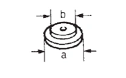
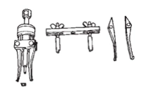
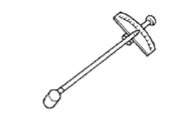

變速箱與傳動系 - 傳動系 - 分動箱 - 準備 - 準備
特殊維修工具
N5040304H0000B00ENG
訂購專用工具時，請使用零件編號開啟專用工具編號替換清單中的「tool order number」。請參閱
專用工具編號替換清單
TechMate 工具之實際形狀可能與此處所示之特殊維修工具有所不同。
工具編號
(TechMate 編號)
工具名稱
說明
ST33061000
(J-8107-2)
沖子
a: 38 mm (1.50 in) dia.
b: 28.5 mm (1.122 in) dia.

CF100A97AA00ENG
拆卸齒環軸承內圈（分動箱側）
KV381054S0
(J-34286)
拉拔器

CF100A98AA00ENG
拆卸齒環軸油封
ST3127S000
(J-25765-A)
預緊力規

CF100A99AA00ENG
測量預緊扭力
已加入書籤
書籤數量過多。
請刪除後重新加入書籤。
×